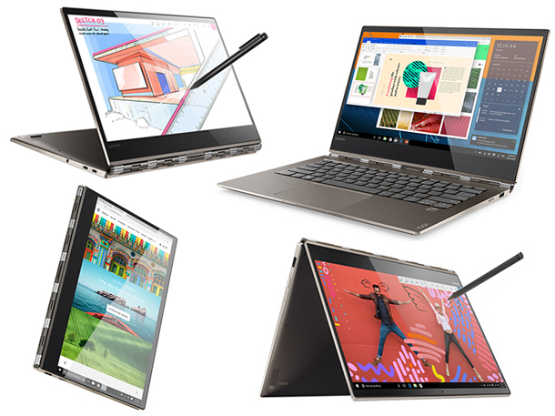

L'outil informatique est presque incontournable aujourd’hui. Le PC est un outil essentiel pour le travail et l’école qui permet de faciliter le travail, de réaliser plusieurs tâches. Il faut savoir bien choisir son PC en sachant premièrement à quoi cela va servir. De nos jours, tout le monde a besoin d’avoir un ordinateur portable à la maison ou au bureau pour un usage personnel.
Une alternative entre le pc portable et la tablette, ces PC portables hybrides, véritable symbiose entre un PC et une tablette numérique, vous donneront accès aux avantages de chacun de ses deux supports que se soit dans un bureau ou bien sur le terrain.
Si vous comptez vous adonner à des activités artistiques ou créatives, vous verrez que le stylet offre de nouvelles possibilités. Très précis comme celui des SurfacePro ou des Ipad Pro, il permet de dessiner, d’annoter des schémas ou même d’écrire à main levée
Toutes les images sont soumisent aux droits d'auteurs